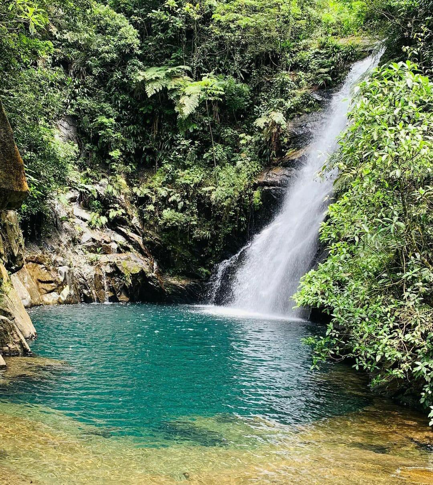

A Cachoeira da Lagoa Azul, localizada em Cubatão, é um dos principais atrativos naturais da região e está inserida no Parque Estadual da Serra do Mar.
Destaca-se por sua queda de água de aproximadamente 30 metros e pelo poço de coloração azul-esverdeada formado em sua base.
O local é cercado por Mata Atlântica preservada, com grande diversidade de fauna e flora.
O acesso é feito por trilha de nível leve a moderado, bastante procurada por visitantes e praticantes de ecoturismo.
A cachoeira possui mais de uma queda e áreas adequadas para banho, principalmente nas partes mais rasas do poço.
Por estar em uma unidade de conservação, o acesso pode ser controlado e exige respeito às normas ambientais.
É um destino valorizado pela beleza cênica, tranquilidade e contato direto com a natureza.

Cachoeira da Lagoa Azul- Localizada em Cubatão
O Parque Caminhos do Mar é um dos principais pontos turísticos de Cubatão.
Localizado na Serra do Mar, reúne natureza preservada e importância histórica.
Abriga a antiga Estrada Velha de Santos e a Calçada do Lorena, do período colonial.
Possui trilhas e mirantes com vistas da Mata Atlântica e da baixada santista.
É um destino muito visitado, com acesso controlado para preservação ambiental.
O parque também integra o Parque Estadual da Serra do Mar, uma das maiores áreas contínuas de Mata Atlântica preservada.
Ao longo do caminho, há monumentos históricos construídos na época do centenário da Independência do Brasil.
A antiga Estrada Velha de Santos já foi uma das principais ligações entre o litoral e o interior paulista.
O local também já serviu de cenário para gravações e é muito procurado para turismo histórico e ecológico.